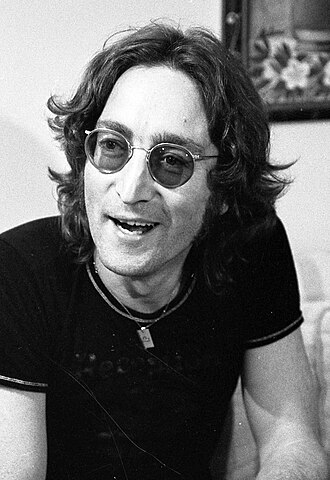

John Lennon

John Winston Ono Lennon, numele la naștere John Winston Lennon, MBE (n. 9 octombrie 1940, Liverpool, Anglia, Regatul Unit – d. 8 decembrie 1980, New York City, New York, SUA), a fost compozitor, muzician, cântăreț, textier, activist și artist complex englez, unul din fondatorii trupei The Beatles.Născut și crescut în Liverpool, Lennon a fost implicat în „mania skiffle”, un stil de muzică cu influențe de jazz, blues, folk și country music. Prima lui trupă, numită The Quarrymen, a evoluat în The Beatles în 1960. Pe măsură ce trupa se dezintegra spre sfârșitul deceniului, Lennon s-a implicat într-o carieră solo, în care a produs legendarele sale albume: "John Lennon/Plastic Ono band” și Imagine, și de asemenea cântece renumite precum "Give Peace a Chance” și "Imagine”. John Lennon s-a retras din domeniul muzical în 1975, pentru a fi aproape de familia sa, dar s-a relansat în 1980, cu un album numit Double Fantasy. El a fost ucis la trei săptămâni după lansarea acestuia.
Lennon era o natură rebelă și avea un spirit acerb în muzica sa, în compozițiile sale, în desenele, în filmele și în interviurile sale, devenind de asemenea controversat din cauza părerilor sale politice. S-a mutat în New York în 1971, unde critica sa asupra războiului din Vietnam l-a determinat pe Richard Nixon la lungi încercări să îl deporteze, în timp ce cântecele sale au fost preluate ca imnuri în mișcarea anti-război.
Până în 2010, circa 14 milioane de albume ale lui se vânduseră în întreaga lume, iar ca compozitor și interpret a fost de 27 de ori pe locul 1 în US Hot 100. În 2002, BBC l-a votat al optulea din cei mai mari 100 de britanici, iar în 2008 revista Rolling Stone l-a votat al cincilea din cei mai mari cântăreți al tuturor timpurilor. După moartea sa, a fost inclus în Songwriters Hall of Fame (în 1987), și în Rock and Roll Hall of Fame (în 1994).